ONIBUS
Pegar os onibus 006 ou 007 na rua Gomes Freire, quase esquina com a Riachuelo, Lapa.
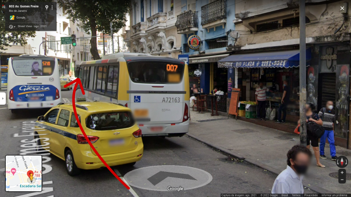
Saltar no Largo do França(vai salta bem na cabine da policia de tijolinho) e virar a direita da cabine de policia.
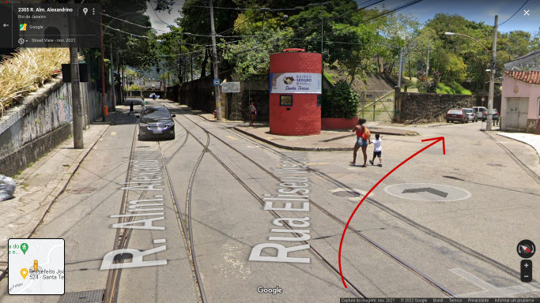
Virar a esquerda, na Prefeito João Felipe(só segui a placa Laranjeira/Rio Cumprido)
ATENÇÃO: Não seguir em frente, entrada para a comunidade do Fallet!!!! 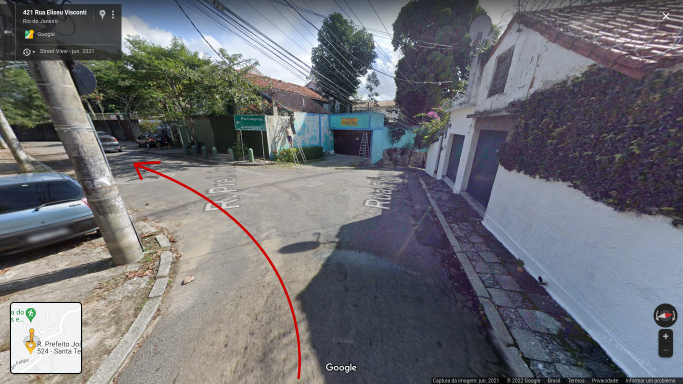
Continuar em frente, meu predio é logo na curva, predio com escada em ponte.
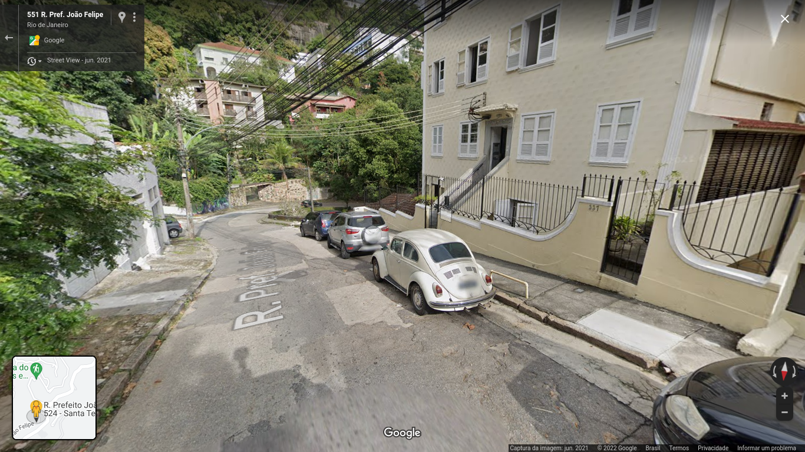
Intinerário via Onibus oculto, clique no icone de "olho" para desocultar.
CARRO VIA TIJUCA
Pegar a rua Barão de Itapagipe(ela é paralela a Haddock Lobo) e bobrar a direita na rua do Bispo.
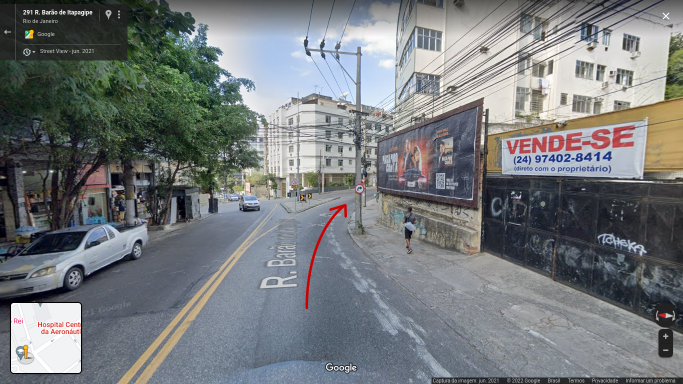
Seguir a rua do Bispo até o final, até ela cruzar a av. Paulo de Frontin.
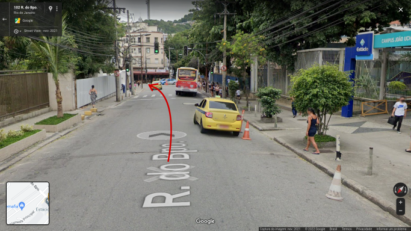
Continuar reto ao passar pela av. Paulo de Frontin, pegando a rua Estrela
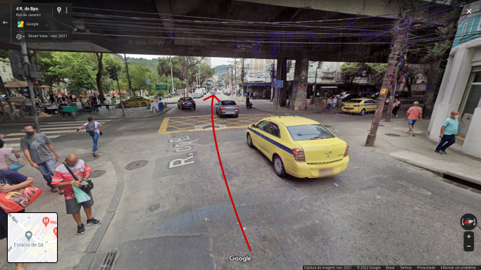
virar a direita na rua Barão de Petropolis
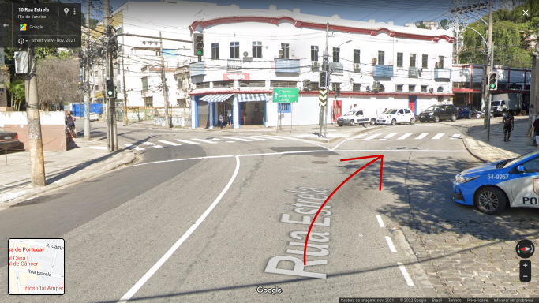
Seguir a Barão de Petropolis sem desviar dela, pegar a esquerda do tunel(imagem 02). NÃO pegar o tunel, ele vai para a rua Alice.
Após passar o tunel, a Barão de Petropolis vira rua Prefeito João Felipe(minha rua).
imagem 01 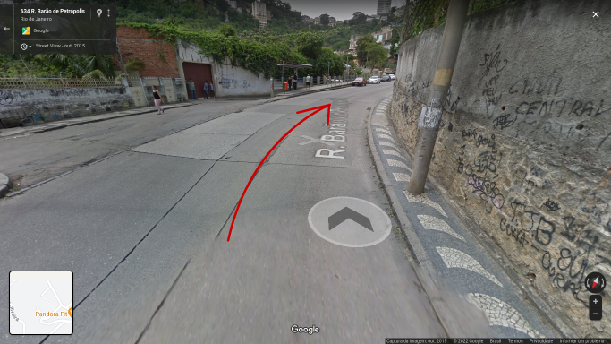 imagem 02 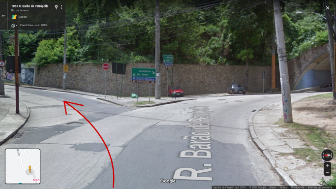
seguir a rua Prefeito João Felipe praticamente até o final dela.
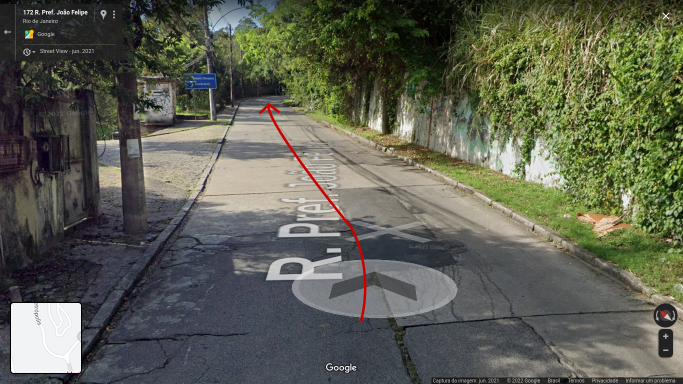
Depois de uma curva bem fechada, fica o meu prédio, numero 537, ap. 301-S
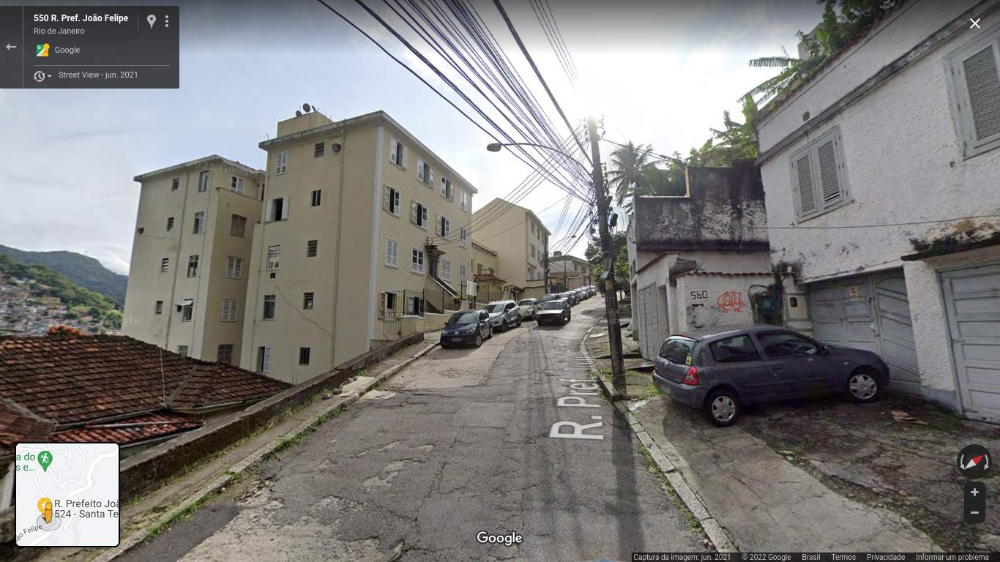
Intinerário tijuca via carro oculto, clique no icone de "olho" para desocultar.